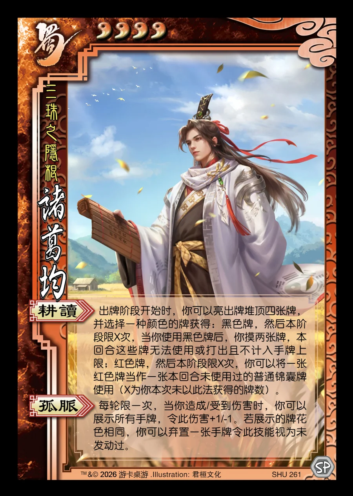

点击卡面查看大图
蜀
诸葛均
♥4三珠之隐根
耕读
出牌阶段开始时，你可以亮出牌堆顶四张牌，并选择一种颜色的牌获得：黑色牌，然后本阶段限X次，当你使用黑色牌后，你摸两张牌，本回合这些牌无法使用或打出且不计入手牌上限；红色牌，然后本阶段限X次，你可以将一张红色牌当作一张本回合未使用过的普通锦囊牌使用（X为你本次未以此法获得的牌数）。
孤脉
每轮限一次，当你造成/受到伤害时，你可以展示所有手牌，令此伤害+1/-1。若展示的牌花色相同，你可以弃置一张手牌令此技能视为未发动过。